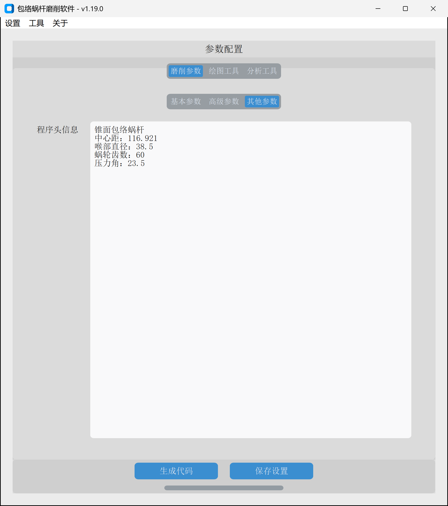

2.3 其他参数与 NC 程序输出解读
一、其他参数：程序头信息
切换到 磨削参数 其他参数，可在文本框中输入任意多行备注（如蜗杆图号、中心距、喉径、齿数、压力角等）。

- 自动注释化：生成程序时，软件会自动在每一行前添加西门子注释符
;，置于;********头信息*********区块之下，既方便操作员机台核对，又不影响 CNC 运行。
二、输出目录结构与文件命名
点击 生成代码 后，软件在 输出程序路径 下创建 PC_<中心距> 文件夹（4 位小数中的 . 替换为 _）：
D:\EG_Demo\NC_Output\
└── PC_116_9210\
├── DIA_450_0000.SPF
├── DIA_452_0000.SPF
├── DIA_454_0000.SPF
├── DIA_456_0000.SPF
├── DIA_458_0000.SPF
└── DIA_460_0000.SPF
- 单文件对应单直径：文件名
DIA_460_0000表示该程序针对当前实测直径为460.0000 mm的砂轮计算。 - 砂轮修整换用原则：车间每修整减小一定砂轮直径后，直接调用最接近当前直径的
DIA_xxx.SPF（或.cpf）子程序即可自动补偿包络半径变化。 - 西门子加密输出：若勾选了
Siemens程序加密，同目录内会直接生成.cpf加密文件，明文.SPF将被自动移除。
三、真实 .SPF 程序片段解读（Sample_C_117）
以下为软件用 Sample_C_117 参数真实生成的 DIA_460_0000.SPF 开头部分：
;********头信息*********
;锥面包络蜗杆
;中心距：116.921
;喉部直径：38.5
;蜗轮齿数：60
;压力角：23.5
;*****版本及日期*********
;软件版本:1.19.0
;生成日期:2026-11-24 09:47:57
;*****加工参数***********
;蜗杆类型: 锥面;
;涡轮分度圆半径: 97.6710mm;
;涡轮加工角度: 60.0000度;
;涡轮齿数: 60齿;
;蜗杆螺旋角度: 3.3930度;
;蜗杆旋向: 右旋;
;磨削方向: 从右往左;
;砂轮直径: 460.0000mm;
;分度圆齿顶高: 3.0200mm;
;磨削余量: 1.0mm;
;磨削尺寸调整: 0.0mm;
;*****输出数据***********
;Y轴加工位置: -2.3176;
;*****外部全局变量*********
;FeedLeft - 剩余磨削量
;Center_Pos_X - 基准圆心坐标.X
;Center_Pos_Z - 基准圆心坐标.Z
;Center_R - 基准圆圆弧半径
;Start_Pos_X - 磨削起点坐标.X
;Start_Pos_Z - 磨削起点坐标.Z
;Start_Pos_B - 磨削起点角度.B - 绝对坐标
;Start_Pos_C - 磨削起点角度.C - 绝对坐标
;End_Pos_X - 磨削终点坐标.X
;End_Pos_Z - 磨削终点坐标.Z
;End_Pos_B - 磨削终点角度.B - 绝对坐标
;End_Pos_C - 磨削终点角度.C - 增量角度
;****************
DEF REAL currentValue;
STOPRE;
currentValue = FeedLeft;
IF (currentValue>=1.00) GOTOF CV_1_00;
IF (currentValue<1.00) AND (currentValue>=0.90) GOTOF CV_0_90;
...
IF (currentValue<0.10) AND (currentValue>=0.00) GOTOF CV_0_00;
IF (currentValue<0) GOTOF CV_0_00;
CV_1_00:
;基准圆心坐标
Center_Pos_X= -298.3590 ;X坐标
Center_Pos_Z= -38.8817 ;Z坐标
Center_R= 300.8818 ;圆弧半径
;============
;磨削起点坐标
Start_Pos_X= -20.5317 ;X坐标
Start_Pos_Z= -154.3887 ;Z坐标
Start_Pos_B= -30.0000 ;B绝对角度
Start_Pos_C= 350.0000 ;C绝对角度
;============
;磨削终点坐标
End_Pos_X= -59.4134 ;X坐标
End_Pos_Z= 143.9703 ;Z坐标
End_Pos_B= 30.0000 ;B绝对角度
End_Pos_C= 3600.0000 ;C轴终端增量角度
RET
四、外部全局变量速查表
机床主程序通过读取 FeedLeft 自动跳入对应 CV_x_xx 标签，并接收以下全局变量完成四轴包络运动：
| 变量名 | 坐标/轴向类型 | 物理含义 |
|---|---|---|
FeedLeft |
外部传入余量 | 机床当前剩余磨削深度（决定执行哪一段 CV_*） |
Center_Pos_X / Center_Pos_Z |
圆弧基准中心 | 包络圆弧中心 X / Z 坐标 |
Center_R |
圆弧半径 | 三点拟合的包络基准圆弧半径 |
Start_Pos_X / Start_Pos_Z |
磨削起点线性轴 | 磨削起点 X / Z 坐标 |
Start_Pos_B / Start_Pos_C |
磨削起点旋转轴 | 磨削起点 B 轴、C 轴绝对角度 |
End_Pos_X / End_Pos_Z |
磨削终点线性轴 | 磨削终点 X / Z 坐标 |
End_Pos_B |
磨削终点摆角 | 磨削终点 B 轴绝对角度 |
End_Pos_C |
磨削终点转角 | C 轴相对起点的增量角度（例：60 齿扫 60° 时为 ±3600.0000°） |